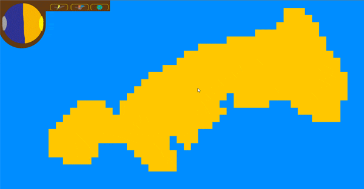

Sam Crook
A humble Games programmer
A little bit about me
I am a up-and-coming games programmer, currently in my thrid year of study at Staffordshire University on Computer Games Programming BSC(Hons). I have had a Keen interest in programming since secondary school, and have been studying it since, moving on to college in which I studied IT, where I learnt a little bit of C#.
My passion for gamming also goes back as far as I can remember, I started life playing video games like Voodoo vince and Blinx: The Time Sweeper on the original Xbox.
I have been lucky enough to participate in the UKIE Green Jam 2019, this was a learning experience for me and my teammates, as up until then we have had our projects with structure and were all made individually. The experienced gained from this ordeal is indispensable.
University projects
Pacman like game (C++)
This project was my first university task. The project was undertaken in the first year, first semester of my university course, the task was simple: Create a game with the core elements of Pacman and expand apon those features. My version of the game strays far from the original Pacman, and adds new features of my own choise.
Each of the 4 ghosts has its own (very) simplistic AI: Green will bounce on the top and bottom of the screen. Red will bounce left and right. Orange will move around aimlessly. Blue will track you down. The objective, as with pacman, is to collect all pellets and fruits whilst avoiding the ghosts collecting the fruits will have different effects on the player.
Given that this was my first attempt at making a game, and the first time using C++, I would have said that it was fairly successful.
Mario like game (C++ / SDL)

This project was my Second university task. The project was undertaken in during the first year, second semester of my university course, the task was: Create a games engine using a SDL framework and implement the original Mario Bros game along with some additional features.
The game consists of 2 levels the first level can be played solo or with a partner, this level involves the player(s) navigating through a static level all whist enemies spawn in and make their own way through the level. The enemies can be stunned if the player hits the central block. The second level is to be played solo. The player can navigate the level but this time the objective is to collect all of the coins in the fastest time, the level is larger than the screen can display so the level is capable of scrolling to show the whole level.
OpenGL 3D scene (C++ / OpenGL / FreeGLUT)

This project was my third and final task for the first year of university and was completed in semester two. The task was: Create a C++ application incorporating various 3D graphics techniques, using an openGL / FreeGLUT framework.
The 3D scene has many features of 3D graphics engines that are used, but is far less powerful and less flexible. The scene is lit using the 3 basic lighting models of: ambient, diffuse and specular. The user can rotate the teapot in the background and has the ability of moving the camera up, down, left and right.
UKIE games jam 2019 (C# / Unity)
This was the first games jam that I participated in, and although I had touched on Unity whist studying at college, this was the first time that I had really used Unity. I grouped up with 5 other members, and when the day came we started brainstorming ideas for what kind of game we wanted to make. We settled on a resource management game in which the human population had to restart after our actions had destroyed the earth. The player would act as god and help the population thrive in this new world. To do so the player could put down a starting location and use certain powers to change the landscape and to make the world more hospitable.
As this was the first time using unity for many of the group we very quickly became stuck with multiple issues, as the game was title based we went about creating an AI that could interact with the tiles in a way that unity would allow. Although we didn’t truly make a game we did learn many invaluable lessons such as: time management and knowing our limits.
DirectX 11 scene (C++ / DirectX 11)

This project took place in the first semester of my second year. Using a base DirectX 11 framework I adapted it so that the player could move around in a 3D scene, of a water based environment.
The player controls the submarine; the player can use 4 different camera angles to do so. The scene allows for various different materials, lighting models and camera angles the scene is very customizable and can be entirely changed to show a wide variety of different things, anything form an empty field to a busy city; although it lacks the AI to allow for autonomous cars.
If you would like more infomation about myself or my code code feel free to get in touch.